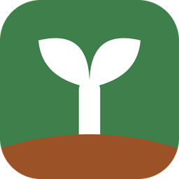
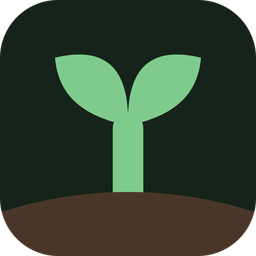
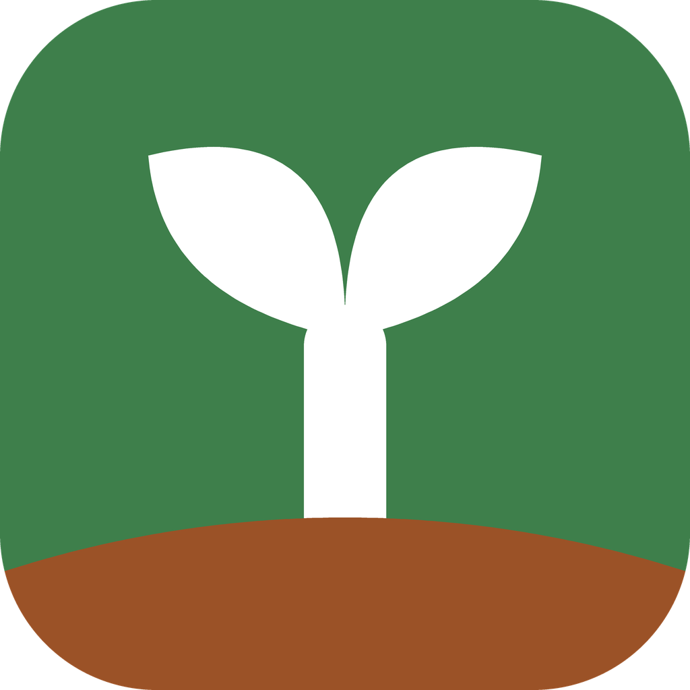
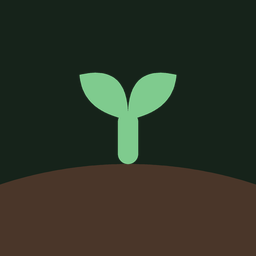
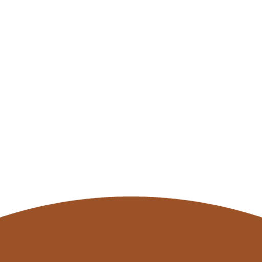
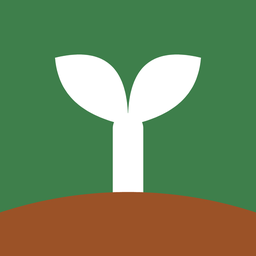

圆角砖是「天空 + 大地」，白色芽自陶土色的土地里破土而出——茎的下端被大地覆盖，所以它是长出来的，不是插上去的。本页与图标产物同源，由 tool/build_app_icon.py 生成，改一个参数即可全链路重出。
通用应用图标（Windows 快捷方式与任务栏、Android 传统启动器）。Windows 一律用浅色档：它的砖底在浅色任务栏 #F3F3F3 上 4.36:1、在深色任务栏 #1F1F1F 上 3.41:1，两端都立得住。


每张都是该尺寸的真实像素，不是缩放预览。40px 是分档线：低于它去掉叶尖细部、茎与叶各自加粗放大，保证小尺寸下白芽仍是可辨的整体轮廓。

8 倍近邻放大，看的不是「缩小后好不好看」，而是「一像素一像素长什么样」。
自适应图标由系统决定外形，所以「背景与芽能不能承受任意裁切」是硬要求。下图不是示意图——它是两层按真实映射合成后的 108 画布，芽被缩到 ∅62/108 的安全圆内，天空与大地本来就全出血，所以在圆形、squircle、方形三种遮罩下都不会缺角、不会露怯。

Android 自适应图标的两层各自独立产出，共用同一映射，所以前景茎的截断点与背景大地的顶点严丝合缝。


全部取自 lib/core/theme/app_theme.dart，不引入新色值。对比度为芽在该底上的 WCAG 实测值。
| 主题 | 层 | 色值 | 芽在其上 |
|---|---|---|---|
| 浅色 | 天空 | #3E7F4BlightPrimary 新芽绿 | 4.84:1 |
| 浅色 | 大地 | #9B5227lightReward 陶土 | 5.79:1 |
| 深色 | 天空 | #16231AdarkSurface | 8.40:1 |
| 深色 | 大地 | #4A3629darkRewardContainer | 5.85:1 |
天空与大地的分界是装饰性的，不承载信息，所以真正该问的是「两色能不能分辨」——按本项目判据用 ΔE00 而非对比度：浅色 42.4、深色 21.6，均远超「显著」门槛（>20 为显著；亮度对比度仅 1.20:1 / 1.44:1，二者亮度接近但色相差得远）。
| 项 | 值 | 说明 |
|---|---|---|
| 设计网格 | 1024 × 1024 | 所有坐标以此为准，渲染时先超采样再逐级降采样 |
| 圆角砖 | r = 232 | ≈22.7%，与界内 SealLogo 的 0.22 同源 |
| 芽包围盒 | y ∈ [218, 884] | 占砖高 65%；上方留白 21% |
| 茎宽 | 122 | 在 40px 档为 3.05px |
| 叶轴 | 268 @ 47° | 与竖直方向夹角；叶由茎体内生出，结合处无缺口 |
| 大地弧 | R = 1639 | 顶点 y=768、两端 y=850，全出血到砖左右边缘 |
| 茎露出 / 埋入 | 316 / 116 | 露出部分即肉眼所见的整株；埋入部分只用来制造「长出来」的关系 |
| 自适应安全圆 | ∅ 62/108 | 官方保证 66；取 62 留余量，避免叶尖在圆形遮罩下贴边 |
| 产物 | 位置 | 尺寸 / 形态 |
|---|---|---|
| Windows 图标 | windows/runner/resources/app_icon.ico | 16/24/32/48/64/128/256 共 7 档，逐档独立渲染 |
| Android 传统启动器 | res/mipmap-*/ic_launcher.png | 48/72/96/144/192 |
| Android 自适应背景 | res/drawable/ic_launcher_background.xml | 矢量：天空 + 大地 |
| Android 自适应前景 | res/drawable/ic_launcher_foreground.xml | 矢量：芽（茎在大地顶点截断） |
| Android 13+ 单色层 | res/drawable/ic_launcher_monochrome.xml | 矢量：同几何，由系统着色 |
| 品牌母版 | assets/branding/app_icon_source{,_dark}.svg | 1024 矢量，改稿从这里起 |
| 品牌位图 | assets/branding/app_icon{,_dark}.png | 1024 × 1024 |
改配色或造型只需编辑 tool/build_app_icon.py 顶部的 PALETTE 与几何常量，重跑一次即全链路同步——本页、母版、ICO、Android 四处一次性重出。